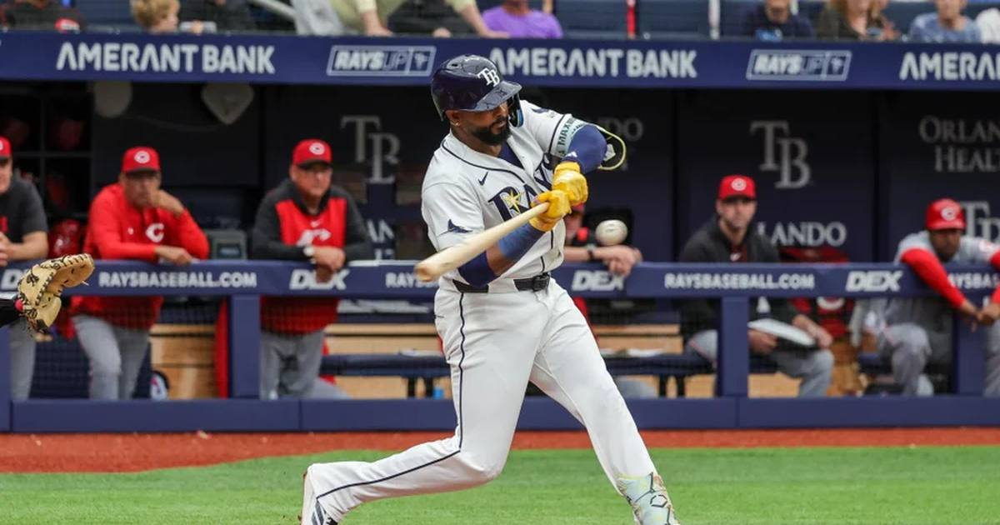

Rays Win the Pennant: 7-3 Game 6 Rout Sets Up First Title-Less World Series Since 1980
Tampa Bay beat Cleveland 7-3 in ALCS Game 6 to win its third pennant, with ALCS MVP Freddy Peralta outdueling his former organization. The World Series vs. Milwaukee starts Friday — and one way or another, baseball crowns a first-time champion.

Disclosure: this post contains affiliate links. I earn a commission on qualifying purchases.
RAYS WIN THE PENNANT. Tampa Bay closed out the ALCS with a 7-3 win over Cleveland in Game 6 on Monday night, taking the series 4-2 and punching its ticket to the World Series against the Milwaukee Brewers.
It's the franchise's third pennant — and its first since 2020. The clincher came on October 19, exactly 18 years after the Rays won their first AL title on October 19, 2008. In front of 40,230 fans at a repaired Tropicana Field, no less.
How Game 6 was won
Tampa Bay never trailed:
• 2nd inning: Richie Palacios ripped a two-run double for the early lead.
• 3rd inning: Jonny DeLuca's sacrifice fly made it 3-0.
• 7th inning: Junior Caminero crushed a two-run homer off the left-field foul pole — his first career postseason home run — off All-Star closer Cade Smith. 5-1.
• 8th inning: Cleveland scratched two runs back against the bullpen (bases-loaded walk and a hit batsman) to make it 5-3. Then Yandy Díaz answered with a two-run homer in the bottom half. 7-3. Done.
Baker closed it out without drama in the ninth.
Fastball Freddy gets the MVP — and faces his old team
Freddy Peralta was named ALCS MVP after going 2-0 with a 0.75 ERA across three appearances: six scoreless innings in the Game 2 win, two huge outs in relief in Game 4, and 5⅓ innings of one-run ball in the Game 6 clincher.
The storyline writes itself: Peralta spent his first eight seasons in Milwaukee — debuting there in 2018, going 17-6 with a 2.70 ERA last year — before the Brewers traded him to the Mets in January. The Mets flipped him to Tampa Bay at the deadline, and now he opens the World Series against the organization that raised him.
A guaranteed first-time champion
Game 1 is Friday, October 23, in Milwaukee. And here's the history: this is the first World Series since the 1980 Phillies-Royals in which both teams are seeking their first title. Neither the Rays nor the Brewers have ever won it all.
One franchise's 0-for-history ends this month. The only question is which.
Sources: ESPN · Milwaukee Journal Sentinel: "Freddy Peralta leads Rays to World Series against former team" · Tampa Bay 28: "Peralta earns ALCS MVP award"
Watch
Source: Junior Caminero, Freddy Peralta and the Rays defeat the Guardians in 6 games! (ALCS Full Highlights) (MLB)
MLB's official full-series highlights — Caminero's foul-pole blast, Peralta's Game 6 gem, and the pennant-clinching celebration at Tropicana Field.
Gear up: Sports category post → [Fanatics](https://fanatics.93n6tx.net/WOLjqe): via Fanatics